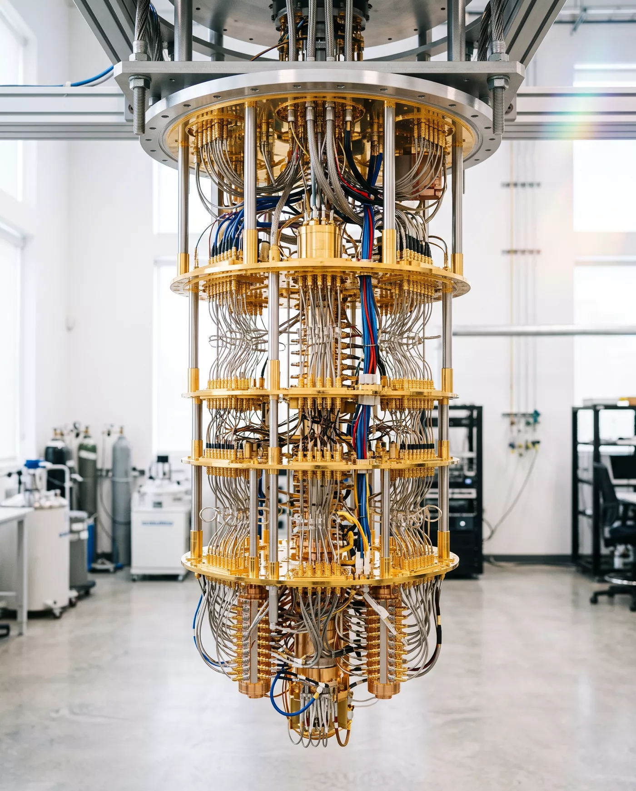

KELVIN is a quantum-computing laboratory. Our processors live at the bottom of a dilution refrigerator, four hundred times colder than deep space, where a single microwave photon is an event and silence is an engineering discipline.
Begin the descent↓
The refrigerator is a building read from the roof. Every plate below is colder than the last, and everything on this page cools with it — watch the readout fall, and notice the site itself slowing down: the colder it gets, the longer every motion takes.
A pulse-tube cryocooler takes the first two hundred and fifty kelvin the way a harbour takes a swell. Radiation shields close around the experiment like eyelids; from here down, room temperature is only a rumour carried by the wiring.
Nitrogen would be liquid here. We are just getting started.
Liquid-helium cold. Niobium and aluminium cross into superconductivity, and current begins to move without loss — the first quantum behaviour you can hold in your hand. The amplifiers that will one day whisper a qubit's answer upward sit here, listening.
Below one kelvin the units change and so does the physics. In the still, helium-3 evaporates out of a bath of helium-4 — and evaporation, as your skin knows, is refrigeration. It is the same principle as sweat, performed by isotopes, near the coldest place on Earth.
The mixing chamber. Ten thousandths of a degree above absolute zero — colder than anywhere nature has ever been, as far as we know, except inside machines like this one. Thermal noise has nothing left to say.
Here, finally, the processor can hear itself think.
Every state of a single qubit is a point on this sphere: |0⟩ at the north pole, |1⟩ at the south, and every superposition in between. Move your pointer to steer the state. Then measure — and watch a continent of possibility collapse to a single pole.
Nitrogen fixation, battery chemistry, drug candidates. Nature is quantum; we stopped pretending otherwise.
Surface codes below threshold. A logical qubit that outlives every physical qubit it is made of.
Spin liquids and strange metals, simulated by machines made of the same physics they describe.
Portfolios, logistics, schedules. Honest benchmarks only — we publish the losses too.